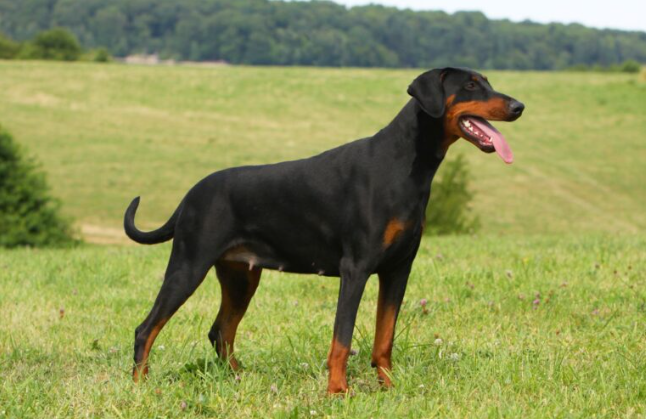

Historia
Esta raza debe su nombre a Karl Friedrich Louis Dobermann, un vigilante nocturno y recaudador de impuestos que entre 1834 y 1894, se encargaba de la custodia de una perrera en la ciudad de Apolda (Turingia, Alemania).
A partir del primer año de vigilancia (alrededor de 1860), comenzó a necesitar un perro para defenderse, pero ninguna de las razas a las que podía acceder era de su entera satisfacción. Comenzó la creación usando un temido perro pastor de turingia llamado Schnuppe, junto con los extintos perros de carnicero (parientes del Rottweiler y Boyero de Appenzell) y perros de muestra (similares a Weimaraner, pero sin raza definida). Después de estos cruces, intervinieron en la formación de la raza un Manchester terrier y una hembra negra de Galgo inglés. Algunas fuentes todavía relatan también la posible participación del antiguo Dogo alemán.
Hay ciertas controversias en relación a qué perros realmente se utilizaron en el desarrollo del dobermann. De este enmarañamiento de argumentos se puede sacar una contradicción, que las mismas personas que debatieron sobre esto son las que afirmaron una no relación de sangre entre el Manchester terrier y el dobermann. Posiblemente los estudios genéticos puedan algún día dar más información exacta sobre el origen del dobermann. Lo que se sabe con certeza es que se cruzaron diversos tipos de perros regionales con temperamento para defensa, y así surgió el perro de Louis Dobermann.
Karl Friedrich Louis Dobermann falleció en 1894, cuatro años antes de que la raza fuera reconocida.
